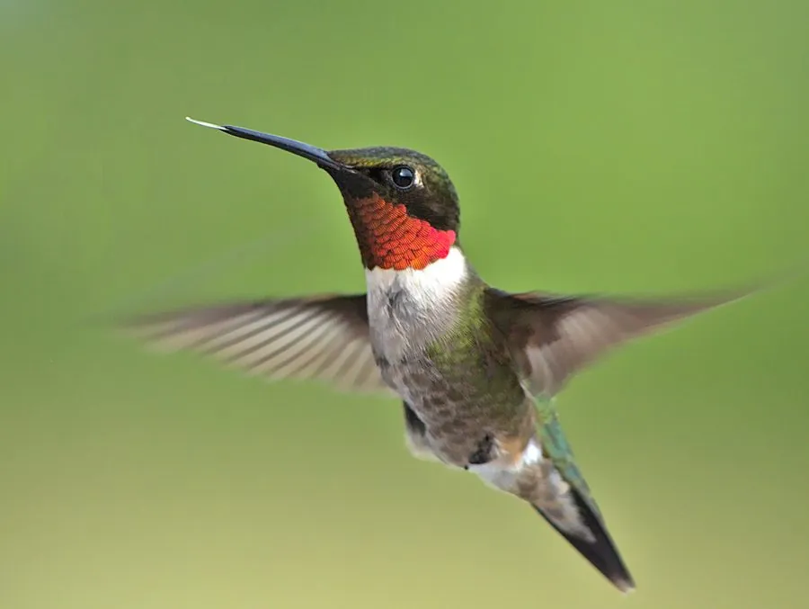

鸟类 · 动物界
红喉北蜂鸟 Archilochus colubris

北美洲东部常见的小型蜂鸟，雄鸟喉部有红宝石般的闪色喉斑，翅膀每秒振动数十次，能原地悬停吸蜜。
- 分类
- 门脊索动物门纲鸟纲目雨燕目科蜂鸟科属北蜂鸟属
- 栖息环境
- 北美洲东部的落叶林、果园、花园与草地边缘，繁殖期需要丰富的花蜜和昆虫
- 地理分布
- 繁殖于加拿大南部和美国东部，越冬于墨西哥和中美洲，中国无分布
- 保护级别
- IUCN 无危（LC）；北美物种，中国无分布
物种志
红喉北蜂鸟体长 7–9 cm，翼展 8–11 cm，体重仅 2–6 g，是北美洲最小的鸟类。雄鸟背部呈翠绿色，喉部有一片红宝石般的闪色喉斑，腹部灰白色；雌鸟喉部白色，尾羽外侧带白斑。它的喙细长如针，舌头分叉并带毛刷状结构，专门用来舔吸花蜜。
红喉北蜂鸟繁殖于加拿大南部和美国东部，越冬于墨西哥和中美洲，每年秋季要跨越约 800 km 的墨西哥湾而不停歇。它们栖息在落叶林、果园、花园和草地边缘，以花蜜为主食，也捕食蚊、蚜虫等小型昆虫补充蛋白质。飞行时翅膀每秒振动约 50 次，可以原地悬停甚至倒飞；夜间食物不足时，它会进入类似冬眠的“蛰伏”状态，把体温和代谢降到极低。雌鸟单独用植物纤维和蜘蛛丝编织胡桃大小的巢，每窝产卵 2 枚，孵化 12–14 天。
形态与习性
- 食性花蜜为主，也捕食蚊、蚜虫等小型昆虫补充蛋白质
- 体长7–9 cm
- 翼展8–11 cm
- 体重2–6 g，是北美洲最小的鸟
- 翅膀飞行时每秒振动约 50 次，可原地悬停
- 繁殖每窝 2 枚卵，孵化 12–14 天
- 迁徙秋季跨越墨西哥湾约 800 km 不停歇
趣味知识
- 雄鸟喉部的红色来自羽毛结构对光线的折射，角度不同颜色会变暗或发亮。
- 红喉北蜂鸟体重不足 5 g，却能不停歇飞越约 800 km 的墨西哥湾。
- 夜间食物不足时，它会进入类似冬眠的“蛰伏”状态，把体温和代谢降到很低。
- 蜂鸟每年往返中美洲越冬，是体型最小却迁徙距离最长的鸟类之一。